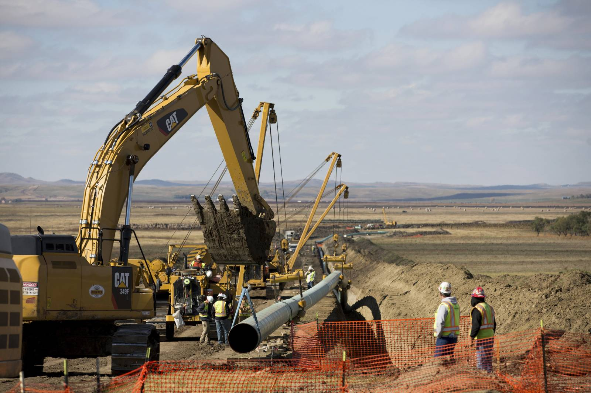
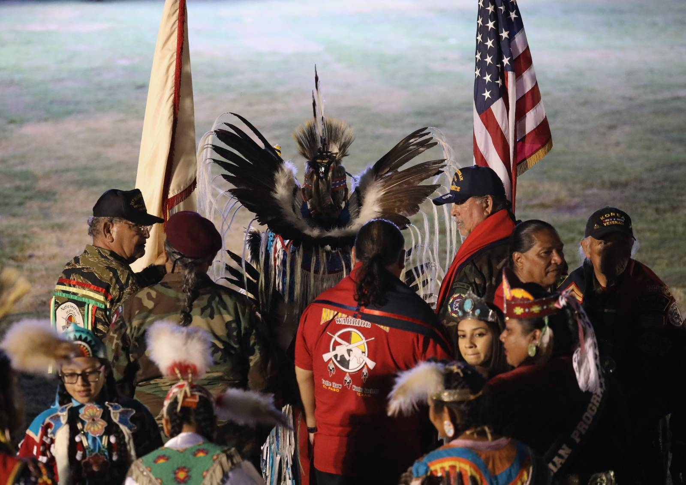

Even if natives aren’t being murdered for their resources, they still face challenges in their lives. As the UN says, “Indigenous peoples often have much in common with other neglected segments of societies, i.e. lack of political representation and participation, economic marginalization and poverty, lack of access to social services and discrimination”. The lack of, specifically, political representation can be seen in the #NoDAPL, or No Dakota Access Pipeline, movement.
The Dakota Access Pipeline is a pipeline that runs under the Missouri River. This river happens to be the main source of drinking water for the Standing Rock Sioux, a tribe of natives with 10,000 members in 2016. The pipeline was created to transport 570,000 barrels of crude oil. In addition to this being terrible for the environment, it also poses the risk of destroying the tribe's main source of water if it were to leak into the river. Those who were behind the pipeline's construction argued that leakage would not be an issue, but any pipeline runs that risk, no matter how safe.
The pipeline passes through a sacred burial ground, and while it may not pass directly through tribe land, the Standing Rock Sioux argue that it is still wrong. The tribe were not consulted once during the planning process and no tribe member was there during the approval process. Most frightening, the fact that they were not adequately consulted breaks federal law, showing how even the government doesn’t care.
No one wants to own up to these atrocities either. It’s understandable to not want to admit your mistakes, but when it comes to the murder of millions, at least an apology would help. According to National Geographic, “Twice this year, Mexican President Andrés Manuel López Obrador has publicly asked the Spanish crown to apologize for atrocities against native people. "We have not forgotten this issue and continue believing they should offer an apology for the invasion," he said during a news briefing in October. So far, Spain has rejected that request.””.
Right before Canada Day, Canada’s day of independence, over 1000 unmarked graves were found on the sight of the Merieval Indian Residential School, one of many Indigenous-only schools that children were forced to attend. They acted essentially as reeducation schools, a lot like concentration camps, where children were forcibly converted. The event of finding these graves has served as a day of reckoning for Canada with many cities canceling their Canada Day celebrations to acknowledge the failures of the past. While it may not be right to outright removing a day of independence celebration, as a country gaining independence is still an incredible thing that should be celebrated, we need to understand that it’s not all perfect. People had to pay for the land we live on, and many with their lives.
We can’t move forward without facing our past and acknowledging it. While it may seem like we lift the burden off our shoulders by denying the truth, we are simply making it heavier as time goes on. To truly remove that burden, we need to acknowledge our actions, rather than continue to make excuses.